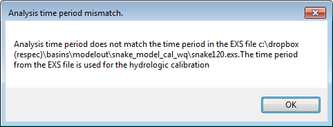

HSPEXP+ assumes that the user has provided correct data in all the model set-up files; currently, error checking in HSPEXP+ is minimal and rudimentary. In some cases, HSPEXP+ may generate some common errors as a pop-up if the format of some input in the EXS file is wrong, or if some required files are missing, or it may generate pop up for some additional information (example below). HSPEXP+ also produces a log file every time it is run. Referring to the log file may give some indication of the cause of the error.

In most cases, you may have to refer to the help manual, and make sure that all input files are set up correctly.